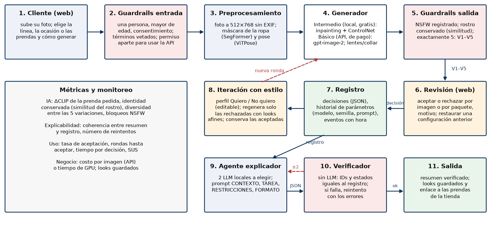

Probador virtual para tiendas de moda en línea: cinco looks sobre tu propia foto, que aprenden de lo que aceptas y rechazas.
¿Cómo verme con cada prenda desde una sola foto, sin que cambie mi identidad y decidiendo yo?
Ana sube su foto de cuerpo entero
Elige Mujer y la ocasión Reunión
Recibe cinco looks y rechaza dos
Deduce su estilo y pide otra ronda
Un probador virtual web con IA: genera cinco looks según la ocasión, las prendas del catálogo o una instrucción propia, con dos maneras de generar a elegir.
El consumidor de tiendas de moda en línea. Quien paga es la tienda, que integra el probador en su web (B2B2C).
Para comprar con más confianza y descubrir combinaciones por ocasión, y para que la tienda conozca lo que gusta a partir de aceptadas y rechazadas.

Las flechas rojas discontinuas son ciclos de corrección: nueva ronda sobre lo rechazado y reintento del LLM con los errores del verificador.
El cliente elige cuál usar; si uno falla, queda el otro
Ocasión Trabajo · enfoque básico (API). Cada imagen lleva la etiqueta «Simulación IA»; rostro, manos y zapatos se conservan.
corte pitillo
corte recto
corte baggy
Las decisiones de cada look, guardadas de forma estructurada
Qwen2.5-1.5B o Phi-3.5-mini, locales, a elección
Sin LLM: identificadores y estados iguales al registro
Qué se aceptó, qué se rechazó y por qué
Reintenta hasta 2 veces con los errores
El programa fija el estado y el LLM solo reescribe el motivo
Plantilla marcada como tal
Colores correctos con la API
una foto de prueba
Intermedio, una pasada
10 looks de la línea mujer
Intermedio, dos pasadas
mismos 10 looks
Aceptación ronda 1 frente a ronda 2 y SUS
con participantes
por completar
Límites: prendas descritas y no artículos exactos · negros de arriba que salen grises en el intermedio · baggy que sale recto sin la API · estilo con vocabulario fijo de etiquetas · cifras exploratorias.
Demostración en vivo · ¿Preguntas? · Gracias